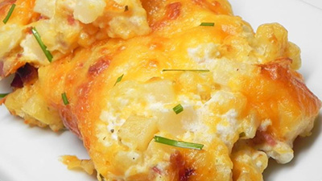

My Favorite Food!
Loaded Crack Potatoes
This is the best recipe you will ever make!

Ingredients
- cooking spray
- 1 (32 ounce) package frozen hash brown potatoes, thawed
- 1 (16 ounce) container sour cream
- 8 slices cooked bacon, crumbled
- 1 (1 ounce) package ranch dressing mix
- 2 cups shredded Cheddar cheese, divided, or more to taste
Directions
- Preheat oven to 350 degrees F (175 degrees C). Grease a 13X9-inch baking pan with cooking spray or butter.
- Combine hash browns, sour cream, bacon, ranch mix, and 1 cup Cheddar cheese in a large bowl; stir until well mixed. Spread into baking pan; cover with aluminum foil.
- Bake in the preheated oven for 45 minutes. Remove foil; sprinkle remaining Cheddar cheese evenly across potatoes. Bake until cheese is bubble and lightly browned around the edges, about 15 minutes.
For more information check out this site